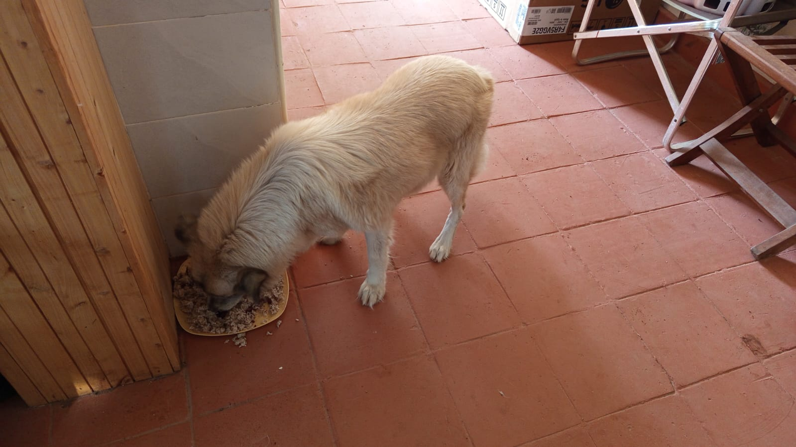

Mucheru World of Golf
Major water infrastructure milestones and agronomic turf progress were achieved at Mucheru World of Golf on Saturday, 3rd October 2026 under the joint supervision of Mr. Gichuhi and Ken:
Course Infrastructure & Agronomy Milestones Achieved
Dam 1 and Dam 3 civil and lining works are 100% complete with water inlet active and impounding water; plumbing pipeline installed to feed both reservoirs; basins swept and inspected for liner integrity; Dam 2 island anchor trenching dug; surplus red soil application is 100% complete across all 18 greens; 1 lorry of riversand delivered; and active riversand application underway on Greens 11 and 15 (most part applied on 15).
- Dam 1 & Dam 3 Civil Works 100% Complete & Water Inlet Commences: Both Reservoir 1 and Reservoir 3 reached full physical and synthetic membrane lining completion today. Water admission commenced immediately, with dedicated water pipes discharging fresh water directly onto the lined basins to begin reservoir filling and storage impoundment.
- Plumbing Pipeline Installation & Water Delivery Network: Site plumbers conducted active maintenance and engineering works along the boundary perimeter corridor, coupling, aligning, and positioning the black HDPE supply pipelines that are currently delivering water into Dam 1 and Dam 3.
- Basin Cleaning & Liner Quality Inspection: In readiness for water filling, a dedicated women's crew swept and cleared dust, stones, and loose debris from the Dam 1 and Dam 3 basins. Concurrently, Ken and Githinji's technical crew conducted systematic surface inspections across the geomembrane sheets to detect and seal any missed hole spots, punctures, or seam imperfections.
- Dam 2 Central Mini Island Circumference Trenching: Civil earthwork crews completed hand-excavating perimeter retention trenches around the elevated natural mini island located in the center of Dam 2, establishing the anchor trench required to tuck in and secure the dam liner.
- Surplus Red Soil Application 100% Complete Across All Greens: Agronomy teams achieved total completion of the surplus red loam soil distribution. Every single putting green across the 18-hole course has now received and leveled its dedicated 1 truck delivery allocation, elevating aprons and collars to design grades.
- Riversand Delivery & Active Spreading on Greens 11 & 15: The course received a fresh delivery of 1 tipper lorry load of washed golden river sand. Agronomy crews immediately mobilized to wheelbarrow and spread riversand over the volcanic pumice base: Green 15 had riversand spread across the majority of its putting surface, while Green 11 commenced riversand application with partial coverage achieved today.
Comprehensive ground video documentation capturing today's construction and agronomy milestones at Mucheru World of Golf: active water inlet and pipeline delivery into completed Dam 1 and Dam 3 basins, women crew sweeping basin liners, mini island circumference trenching at Dam 2, fresh riversand delivery stockpile, and crew spreading riversand over Greens 11 and 15.
18-hole putting green status audit showing the latest work completed and current condition for each green as of October 3, 2026:
| Green | Current Technical & Agronomic State | Milestone Status |
|---|---|---|
| Green 1 | Surplus red soil (from 1 truck delivery) applied and leveled around collar and surrounds (Oct 2). | Surplus Red Soil Applied |
| Green 2 | Surplus red soil (from 1 truck delivery) applied and leveled around collar and surrounds (Oct 2). | Surplus Red Soil Applied |
| Green 3 | Surplus red soil (from 1 truck delivery) applied and leveled around collar and surrounds (Oct 2). | Surplus Red Soil Applied |
| Green 4 | Surplus red soil spread and leveled around surrounds per Joe's instructions (Oct 1). | Surplus Red Soil Applied |
| Green 5 | Water pipeline connected from Peter's supply; overhead sprinklers running on mature grass (Sep 29). | Water Connected • Sprinklers On |
| Green 6 | Surplus red soil applied to raise and level surrounds (Sep 28). | Apron Raised • Palms Placed |
| Green 7 | Received 1 lorry riversand delivery (2 lorries delivered to date) (Oct 1). | Riversand Delivered |
| Green 8 | Surplus red soil spread and leveled around surrounds per Joe's instructions (Oct 1). | Surplus Red Soil Applied |
| Green 9 | Surplus red soil (from 1 truck delivery) applied and leveled around collar and surrounds (Oct 2). | Surplus Red Soil Applied |
| Green 10 | Surplus red soil (from 1 truck delivery) applied and leveled around collar and surrounds (Oct 2). | Surplus Red Soil Applied |
| Green 11 Today | Riversand application in progress over pumice bed; partial coverage completed (Oct 3). | Riversand in Progress |
| Green 12 | Surplus red soil (from 1 truck delivery) applied and leveled around collar and surrounds (Oct 2). | Surplus Red Soil Applied |
| Green 13 | Surplus red soil spread around surrounds to raise and match green level (Sep 29). | Surplus Red Soil Applied |
| Green 14 | Surplus red soil spread around surrounds to build up perimeter level (Sep 29). | Surplus Red Soil Applied |
| Green 15 Today | Riversand applied over pumice bed across most part of green (Oct 3). | Riversand Applied (Most Part) |
| Green 16 | Surplus red soil spread around surrounds to blend with fairway (Sep 29). | Surplus Red Soil Applied |
| Green 17 | Surplus red soil spread around surrounds to raise and align levels (Sep 29). | Surplus Red Soil Applied |
| Green 18 | Surplus red soil spread and leveled around collar and surrounds (Sep 30). | Surplus Red Soil Applied |
Comprehensive 18-hole championship teebox platform audit tracking earthwork leveling, structural embankments, and playing corridor alignments as of October 3, 2026:
| Teebox | Current Technical & Earthwork State | Platform Status |
|---|---|---|
| Tee 1 | Championship launch platform completely reshaped, cut, and graded to design elevation using Backhoe Loader (Sep 24); received 1 lorry red soil delivery (Sep 26). | Platform Reshaped |
| Tee 2 | Playing launch platform completely reshaped, contoured, and graded using Backhoe Loader (Sep 24); received 1 lorry red soil delivery (Sep 26). | Platform Reshaped |
| Tee 3 | Playing launch platform completely reshaped, contoured, and graded using Backhoe Loader (Sep 24); received 1 lorry red soil delivery (Sep 26). | Platform Reshaped |
| Tee 4 | Championship launch platform completely reshaped, cut, and graded using Backhoe Loader (Sep 23); received 1 lorry red soil delivery (Sep 26). | Platform Reshaped |
| Tee 5 | Main perimeter drainage pipeline backfilled all the way past Maina's place (Oct 2). | Drainage Backfilled |
| Tee 6 | Precision leveling and compaction completed; fresh delivery of 1 lorry red loam topsoil unloaded at platform surrounds (Sep 26). | Red Soil In • Leveled |
| Tee 7 | Crowded corner palm uprooted and relocated; additional palm brought and planted into vacant hole (Oct 1). | Palms Relocated & Planted |
| Tee 8 | Graded, leveled, and contour-adjusted; fresh delivery of 1 lorry red loam topsoil unloaded directly on platform (Sep 26). | Red Soil In • Graded |
| Tee 9 | Playing platform leveled and surrounding perimeter ground graded (Sep 1); received 1 lorry red soil delivery (Sep 26). | Platform Leveled |
| Tee 10 | Graded and compacted platform serving the start of the back-nine playing corridor; received 1 lorry red soil delivery (Sep 26). | Platform Compacted |
| Tee 11 | Rough shaping, elevation grading, and Backhoe subsoil leveling completed (Sep 7); received 1 lorry red soil delivery (Sep 26). | Shaped & Graded |
| Tee 12 | Dual platforms established: primary championship tee resized; new forward Ladies' Tee platform constructed (Sep 5); received 1 lorry red soil delivery (Sep 26). | Dual Platforms Complete |
| Tee 13 | Playing platform completely reshaped, contour-cut, and precision leveled to design elevations using Backhoe Loader (Sep 25); received 1 lorry red soil delivery (Sep 26). | Platform Reshaped |
| Tee 14 | Playing platform reshaped, elevation precision-leveled, and protective boundary embankment reinforced (Sep 16); received 1 lorry red soil delivery (Sep 26). | Reshaped & Leveled |
| Tee 15 | Playing platform completely shaped and contour-leveled with backhoe loader (Sep 19); received 1 lorry red soil delivery (Sep 26); main HDPE waterline laid in boundary trench (Sep 15). | Shaped & Leveled |
| Tee 16 | Protective earthen boundary barrier between Tee 16 and Green 16 reshaped, graded, and reinforced using Backhoe Loader (Sep 25); received 1 lorry red soil delivery (Sep 26); platform leveled (Sep 20). | Barrier Berm Reworked |
| Tee 17 | Championship launch platform completely reshaped, contour-cut, and precision-graded to design elevation using Backhoe Loader (Sep 25); received 1 lorry red soil delivery (Sep 26). | Platform Reshaped |
| Tee 18 | Championship tee platform leveled; perimeter approach cleared and graded (Sep 1); received 1 lorry red soil delivery (Sep 26). | Platform Leveled |
Operations Agronomy & Engineering Synthesis
Putting Greens Progress: 18 of 18 greens (100%) have subgrade foundations excavated and membrane lined; 18 of 18 (100%) have volcanic pumice layers compacted; all 18 greens (100%) have completed surplus red soil application with 1 truck allocation per green fully utilized; fresh delivery of 1 lorry riversand received today with active riversand spreading on Green 11 (in progress) and Green 15 (applied to most part); Green 5 is 100% grass-established under active sprinkler irrigation.
Reservoir Infrastructure & Earthworks: Dam 1 and Dam 3 are 100% physically complete and lined with dedicated water supply pipeline installed and water inlet actively filling both basins; Dam 1 and Dam 3 basins swept and audited for liner integrity; Dam 2 central mini island circumference anchor trenching completed for liner tucking; perimeter drainage backfilled past Maina's place.
Sequential field photographic documentation covering riversand delivery, ground and aerial riversand spreading on Green 15 and Green 11, Dam 1 basin clearing, pipeline installation and aerial water filling, Dam 3 seam inspection, ground water inlet and completed aerial water impoundment, utility maintenance, and Dam 2 mini island circumference anchor trenching:

Material Delivery — Golden Riversand Stockpile Delivered
Fresh delivery of 1 tipper lorry load of washed golden river sand tipped on site for green foundation bedding.

Agronomic Construction — Wheeling Riversand to Green Bed
Field crew loading wheelbarrows with fresh river sand from the stockpile to apply over the compacted pumice foundation.

Aerial Perspective — Crew Spreading Riversand on Putting Green
High-angle drone view showing the agronomy crew wheeling and depositing uniform river sand mounds across the pumice green bed bordered by red soil surrounds.

Putting Green 15 — Active Riversand Layer Spreading
Laborers applying river sand across Green 15, wheeling sand onto the gray pumice bed surrounded by banked red topsoil surrounds.

Putting Green 15 — Riversand Applied Across Most of Surface
Ground progress on Green 15 showing golden river sand covering the majority of the putting green bed over the subgrade pumice layer.

Putting Green 15 Aerial — Riversand Covering Major Portion
Comprehensive drone photograph of kidney-shaped Green 15 with roughly 85–90% of the bed covered in neat rows of sand mounds, framed by leveled red soil surrounds.

Putting Green 11 Aerial — Riversand Spreading in Progress
Aerial drone capture of circular Green 11 showing active riversand spreading across 40–45% of the pumice bed, with an artisan wheeling sand within the outer red soil apron bund.

Dam 1 Preparation — Women Crew Cleaning Basin & Seams
Dedicated women crew sweeping dust and debris from the synthetic geomembrane liner in Dam 1, preparing the basin for water inlet.

Dam 1 Reservoir Milestone — Water Inlet Commences
Dedicated HDPE water pipeline discharging fresh water into the sealed basin of Dam 1, initiating initial reservoir impoundment.

Dam 1 Aerial View — Water Spreading Across Reservoir Basin
Overhead drone perspective documenting fresh water flowing steadily from the inlet pipe and fanning out across the watertight black geomembrane liner floor.

Dam 1 Aerial Landscape — Reservoir Water Impoundment
High-altitude landscape drone view capturing the entire Dam 1 reservoir impounding water within its graded earth embankments against the estate backdrop.

Dam 3 Quality Inspection — Finishing Touches & Hole Spot Checks
Women crew alongside Ken and Githinji's team inspecting Dam 3 liner seams and basin surface for any hole spots before water filling.

Supply Line Engineering — Positioning Pipeline to Dam 3
Workers positioning and aligning the flexible water supply pipe through the anchor trench to supply Dam 3.

Supply Line Engineering — Coupling & Securing Water Pipeline
Plumber and field team securing and connecting the water pipe leading into the Dam 3 reservoir basin.

Dam 3 Milestone — Water Filling Commences
Active water stream discharging directly from the connected pipeline onto the lined floor of Dam 3, marking the start of reservoir filling.

Dam 3 Aerial View — Completed Reservoir with Active Inflow
Sweeping aerial drone photograph of the long, winding Dam 3 reservoir showing the completed geomembrane liner with reflective impounded water pooling along the basin floor.

Utility Maintenance — Plumber Servicing Estate Water Piping
Dedicated estate plumber carrying out maintenance and leak prevention checks on the water piping infrastructure.

Dam 2 Earthworks — Mini Island Circumference Anchor Trenching
Manual trenching completed around the perimeter of the central mini island in Dam 2 to secure and tuck in the dam liner edges.
Chaka Farms
Daily operations at Chaka Farms on Saturday, 3rd October 2026 encompassed estate water plumbing troubleshooting and fusion welding, drainage manifold chamber wall masonry, tractor rotavator cultivation, debris clearance at Gate A, dairy milking yield reconciliation, and livestock parasite control:
Chaka Farms Operations Summary
Underground leaking water pipe at lawn repaired by Ken and Willy, restoring house and washroom water; drainage manifold stone wall rising; tractor rotavator tilling completed; Gate A debris cleared with pickup; tractor power-washed; 6.5L gross cow milk harvest fully reconciled (5.0L sold, 1.5L internal); and cowshed hygiene and livestock acaricide spraying completed.
- Underground Water Supply Leak Remediation (Ken & Willy): Following diagnostic investigation of low water pressure, Ken and Willy pinpointed an underground loose pipe connection beneath the main house lawn near the planters. They excavated the turf, cut out the leaking connection, and completed PPR socket fusion welding to permanently secure the line with heavy-duty fittings, stopping water loss and fully restoring water supply to the main house and outdoor washrooms.
- Drainage Manifold Chamber Wall Construction (Ken): Masonry artisans actively raised stone wall courses around the manifold piping assembly over the cured concrete base slab cast yesterday, advancing protected junction chamber walls for farm drainage flows.
- Tractor Rotavator Field Cultivation (Kinoti): Kinoti operated the estate's green LIMA 904 tractor equipped with a rear rotary cultivator (rotavator) across farm parcels, tilling soil beds to fine tilth in readiness for planting.
- Gate A Debris Haulage & Tractor Cleaning (Kinoti): Using Mr. Gichuhi's pickup truck, Kinoti cleared construction debris and farm waste from Chaka Farm Gate A. After completing field cultivation, Kinoti conducted thorough high-pressure power-washing of the LIMA 904 tractor.
- Cowshed Hygiene & Livestock Acaricide Spraying (Kamandau): The cowshed was thoroughly washed down, and Kamandau completed systematic acaricide spraying across all farm cattle, goats, and sheep for external parasite and tick control.
Quantitative reconciliation of gross dairy harvest, commercial sales dispatches, and internal farm allocations for Saturday, 3rd October 2026:
| Production & Allocation Category | Morning Session | Evening Session | Daily Total | Accounting Classification |
|---|---|---|---|---|
| Commercial Milk Sales (Dispatched) | 3.0 L | 2.0 L | 5.0 L | Commercial Sales Outflow |
| Goat Kids Milk Ration | 0.5 L | — | 0.5 L | Internal Farm Allocation (Livestock) |
| Gladys Allocation (Staff) | 0.5 L | — | 0.5 L | Internal Farm Allocation (Staff) |
| Maasai Allocation (Security) | 0.5 L | — | 0.5 L | Internal Farm Allocation (Security) |
| Total Internal Farm Allocations | 1.5 L | Total Internal Outflow | ||
| Total Gross Cow Milk Harvested (Sales + Allocations) | 6.5 L | 100% Accounted Production (4.5L AM / 2.0L PM) | ||
📌 Ground Truth Accounting Note
In accordance with the estate milk reconciliation standard established on October 1st, Kamandau's recorded sales of 3.0L morning and 2.0L evening represent commercial milk sold (5.0L total). When added to internal farm disbursements (0.5L goat kids ration, 0.5L Gladys staff ration, and 0.5L Maasai security ration), total gross cow milk harvested stands at exactly 6.5 Litres (4.5L morning + 2.0L evening) with zero discrepancy.
Daily routine activities covering farm working dogs, training conditioning, and estate presentation for Saturday, 3rd October 2026:
Canine Wellness & Grounds Presentation Note
Canine hygiene, manners conditioning, and afternoon off-leash physical exercise were successfully carried out by Willy, while compound grounds were maintained to pristine standards by Monica.
- Canine Grooming & Bathing (Willy): Willy conducted full bathing, coat grooming, and parasite inspection during the morning session, ensuring immaculate canine hygiene.
- Kennel Sanitation & Crate Manners (Willy): All kennel stalls were washed, sanitized, and laid with dry bedding. Willy reinforced crate entry manners and practiced "paw" command conditioning to maintain discipline.
- Afternoon Off-Leash Paddock Exercise (Willy): During the afternoon, Willy led the dogs on an extensive off-leash exercise run across the open farm paddocks, encouraging social play and physical stamina.
- Compound Environs & Garden Upkeep (Monica): Monica carried out compound sweeping and grounds upkeep, tending ornamental garden beds, clearing lawn debris, and maintaining immaculate driveway environs.
Sequential field photographic documentation covering drainage manifold stone wall construction, underground lawn water pipe repair by Ken and Willy, repaired PPR connection, and tractor power-washing:

Drainage Infrastructure — Manifold Stone Wall Construction
Masonry crew erecting stone wall courses around the manifold piping assembly over the concrete base slab cast yesterday.

Utility Diagnostics & Repair — Ken & Willy Repairing Leaking Pipe
Ken and Willy personally excavating the lawn and using PPR pipe welding equipment and fittings to repair the loose water pipe connection.

Water Supply Remediation — Repaired Pipe Connection at Lawn
Close-up view of the excavated lawn showing the green PPR supply pipeline securely joined and sealed, stopping water loss.

Farm Machinery Maintenance — Power-Washing LIMA 904 Tractor
Kinoti using a high-pressure washer to clean the estate's green LIMA 904 tractor fitted with the rear rotavator attachment after field tilling.
Kabete Residence
Major structural masonry progress and material logistics were executed at Kabete Residence on Saturday, 3rd October 2026. Daily updates and operations were overseen and shared by Njoki:
Kabete Residence Milestone Achievements
Foundation masonry actively progressing with walls rising 4–5 courses high over the concrete base slab; two heavy truck deliveries of building sand and machine-cut stones safely offloaded; and resident pet care routines completed for Ajabu and cats Reo, Mocha & Aiko.
- Building Sand Delivery & Offloading: A heavy tipper truck delivered a full consignment of fine construction sand to Kabete Residence. Laborers offloaded the sand along the driveway perimeter, staging the aggregate for ongoing structural foundation mortar mixing.
- Machine-Cut Foundation Stone Delivery & Stacking: A green Isuzu commercial tipper truck arrived loaded with dense, machine-cut building foundation stones. Field workers carefully unloaded and stacked the stones adjacent to the excavation pit to supply the masonry crew.
- Foundation Stone Masonry Wall Construction: With the concrete base slab cured, masonry artisans actively raised structural foundation walls. Masons bedded dressed stones in thick cement mortar along taut alignment stringlines, advancing walling up to 4–5 courses high along the excavation perimeter and structural partition footings.
- Domestic Pet Wellness & Care: Daily nutrition and wellness routines were completed for Kabete's resident pets. Ajabu the Golden Retriever enjoyed his nutritious meal on the cool veranda tile floor, while resident cats (Reo, Mocha, and Aiko) dined side-by-side from stainless steel bowls in the hallway corridor.
Sequential field photographic documentation covering sand and stone delivery truck offloading, progressive raising of foundation walls over the base slab, and domestic pet welfare:

Civil Construction Logistics — Sand Delivery Unloaded
Tipper lorry offloading a full load of clean construction sand along the boundary driveway for foundation mortar mixing.

Material Deliveries — Offloading Building Sand Bed
Laborers managing the discharge of quality building sand from the truck bed into the Kabete Residence staging area.

Foundation Stone Logistics — Dressed Stones on Tipper Lorry
Green Isuzu truck loaded with machine-cut building foundation stones arrived at Kabete Residence for foundation masonry.

Masonry Logistics — Stacked Foundation Building Stones
Neatly offloaded and stacked quarry foundation stones positioned beside the delivery truck, ready for laying.

Foundation Construction — Laying Initial Stone Courses
Masons in protective boots laying dressed foundation stones with cement mortar over the cured concrete base slab along the earth bank.

Foundation Masonry — Perimeter Wall Alignment Rising
Wide angle of the foundation excavation showing stone wall courses rising 2 to 3 courses high around the perimeter slab.

Structural Masonry — Foundation Walls Reaching 4–5 Courses
Foundation walling progressing rapidly up to 5 courses high along the back retaining perimeter and structural partitions.

Civil Teamwork — Masons Checking Levels and Stringlines
Building crew actively applying mortar and setting stones along taut alignment stringlines to ensure plumb structural foundation walls.

Domestic Pet Care — Ajabu Mealtime on Veranda
Ajabu the Golden Retriever enjoying his nutritious meal on the cool terracotta tiled veranda at Kabete Residence.

Domestic Pet Care — Reo, Mocha & Aiko Feeding Routine
Resident cats Reo, Mocha, and Aiko dining side-by-side from stainless steel dishes in the hallway corridor.